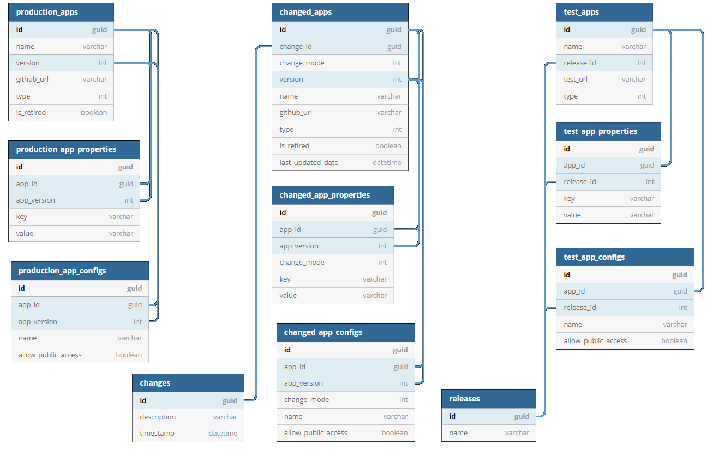
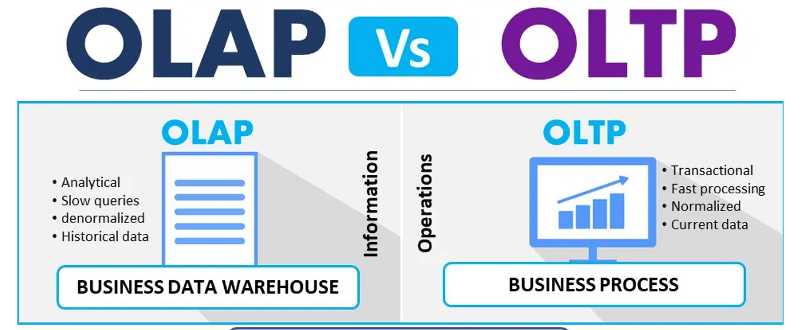
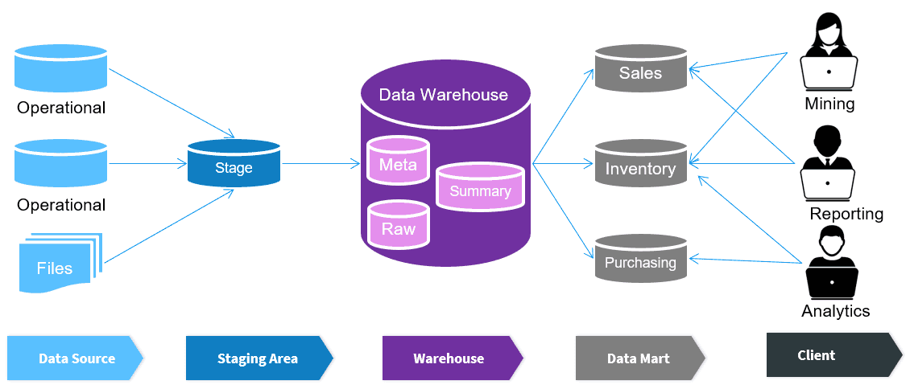
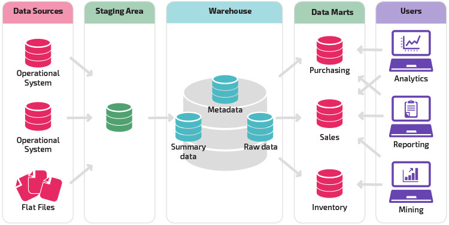

Intro to Relational Databases
Data Analysis With SQL
Karen Hovhannisyan
2026-02-08
Learning Goals
- Understand what a database is and why it is essential for analytics
- Distinguish between relational and non-relational databases
- Understand the role of OLAP systems and RDBMS in analytics workflows
- Explain differences between Data Warehouse, Data Mart, Data Lake, and Data Lakehouse
- Build and run a local PostgreSQL database using Docker
Where SQL Fits in Data Analytics
SQL sits at the core of the analytics stack
- Used to interact with:
- operational databases
- data warehouses
- data lakes and lakehouses
- Almost every analytics tool relies on SQL:
- BI tools (Tableau, Power BI)
- Machine learning feature pipelines
- Python/R analytics workflows
- Mastering SQL enables you to:
- ask better questions
- access data independently
- scale your analytical work
What Is a Database?
A database is a structured collection of data stored electronically
Data is organized into:
- tables
- rows
- columns
A database is managed by a Database Management System (DBMS)
The DBMS is responsible for:
- storing data
- retrieving data efficiently
- enforcing rules and constraints
- supporting multiple users concurrently
Why Databases Are Not Excel
- Spreadsheets are designed for individual, ad-hoc analysis
- Databases are designed for shared, institutional data use
- Key limitations of spreadsheets:
- entire dataset loaded into memory
- poor performance at scale
- weak support for concurrent users
- Databases provide:
- efficient data access
- concurrency control
- reliability and consistency at scale
Types of Data
In analytics, data is categorized by how it is structured
- The structure determines:
- how data is stored
- how it is queried
- which tools can process it efficiently
- Three major categories:
- structured data
- unstructured data
- semi-structured data
Databases and analytics systems are designed differently for each type
Types of Data: Visual Overview
Types of Databases
Types of Databases
- Relational Databases
- Table-based, fixed schema
- Queried using SQL
- NoSQL Databases
- Flexible schema
- Designed for scalability and distributed systems
- Graph Databases
- Nodes and relationships
- Optimized for connected data
Relational Databases
NoSQL Databases

OLAP Systems
- Optimized for analytics and reporting
- Read-heavy workloads
- Large historical datasets
- Complex queries and aggregations

Graph Databases

OLTP Systems
- Optimized for real-time transactions
- Write-heavy workloads
- Many small, fast operations
- Strong consistency (ACID)
ACID Transactions
- Atomicity: all operations succeed or none do
- Consistency: database moves from one valid state to another
- Isolation: concurrent transactions do not interfere
- Durability: committed data is not lost
BASE Systems
Basically Available
Soft state
Eventually consistent
Used mainly in distributed NoSQL systems
Favors availability over immediate consistency
Temporary inconsistencies are acceptable
Data becomes consistent eventually
The CAP Theorem
- Applies to distributed systems
- A system cannot guarantee all three at the same time:
- Consistency
- Availability
- Partition Tolerance
- During a network partition: the system must choose between Consistency and Availability
- Explains trade-offs in large-scale distributed databases
OLAP vs OLTP Summary
Centralized Databases

Distributed Databases
Data Management Architectures
Data Management Architectures
- Data Warehouse (DW)
- Data Mart (DM)
- Data Lake (DL)
- Data Lakehouse (DLH)
Data Warehouse (DW)
Data Mart (DM)
Data Lake (DL)
Data Lakehouse (DLH)

Data Management Architectures — Summary
- DW: governed, structured, BI-focused
- DM: domain-specific slice of DW
- DL: raw, flexible, ML-oriented storage
- DLH: unified DW + DL with ACID guarantees
Intro to SQL
Intro to SQL
SQL (Structured Query Language)
- Developed by IBM (1970s)
- Public release: 1979
- Standardized by ANSI
- Developed by IBM (1970s)
Primary language for relational databases
Used for:
- manipulating data
- querying data
- defining database structures